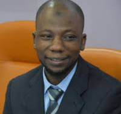

Department leadership
Dr. Khalid Haruna
Head of Department · Department of Computer Science

Profile review
This page uses the photograph supplied for the project. Confirm qualifications, research interests and publication details with official FUTB sources before launch.
Academic profile
About Dr. Haruna
Dr. Khalid Haruna is the Head of the Department of Computer Science at the Federal University of Technology Babura (FUTB). His reported research interests include recommender systems, the Internet of Things (IoT), big data analytics, sentiment analysis and e-learning.
Academic qualifications
- PhD in Information Systems, University of Malaya (2018) — verify details against the current official university biography.
- Bachelor's and master's degrees, Bayero University Kano — add exact degree titles and award years after verification.
Research interests
Selected publications
[Add verified publications with author lists, titles, venues, years and DOI or publisher links.]
Contact and professional profiles
[Add approved institutional email and official research profile links, if available.]
← Back to staff directory